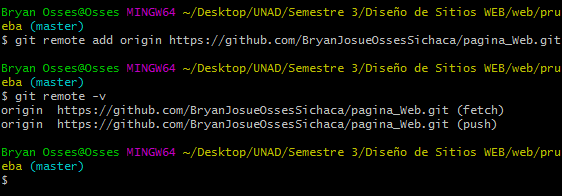

O.V.I Diseño Web - Grupo 51
1. existen diferentes tipos de sistemas de control de versiones, Git es un sistema gestor de versionamiento:
Local
- ya que se trata unicamente de un base de datos simple que contiene el registro de todos los cambios realizados, guardando un conjunto de parches con la diferencia entre los archivos de una version u otra.
Centralizado
- ya que existe un unico repositorio central al cual debemos estar conectados para realizar cambios, del cual es responsable un unico usuario y unicamente este usuario es quien puede tomar decisiones sobre el repositorio.
Distribuido
- ya que cada uno de los clientes puede tener una copia completa con todos los archivos e historial de confirmaciones del proyecto de manera local, asi como trabajar sobre el mismo sin necesidad de estar conectado siempre.
Ninguna de las anteriores.
2. cuales de las siguientes opciones son afirmaciones del sistema de control de versiones Git (Seleccione unicamente 2 opciones si selecciona mas de 2 automaticamente la pregunta queda invalidada).
Git es un sistema de control de versiones, diseñado originalmente por Richard Stallman creador de la Free Software Foundation.
Para trabajar con Git podemos utilizar la terminal del sistema (Mac Os y distribuciones de Linux) o Git Bash en windows.
Podemos utilizar el comando cd para movernos entre los diferentes directorios del sistema.
Con git podemos trabajar en nuestra propia copia local sin necesidad de estar conectados con el respositorio remoto.
3. cual de las siguientes opciones es una respuesta valida del comando
$ git status
On branch master
No commits yet
nothing to commit (create/copy files and use "git add" to track)
[master (root-commit) f021a89] agregando Index 1 file changed, 2 insertions(+) create mode 100644 documento.txt
commit f021a8926828b803b02dfbfba6f5d9a9fef954ce (HEAD -> master)
Author: Bryan Josue Osses Sichaca <megamitensei1994@gmail.com>
Date: Thu Apr 12 00:08:29 2018 -0500
user.name=Bryan Josue Osses Sichaca
user.email=megamitensei1994@gmail.com
github.user=BryanJosueOssesSichaca
github.token=ff657hfbsbfjd7y493h4fndsj28
filter.lfs.clean=git-lfs clean -- %f
filter.lfs.smudge=git-lfs smudge -- %f
filter.lfs.process=git-lfs filter-process
filter.lfs.required=true
core.autocrlf=true
core.excludesfile=C:\repo\gitignore_global.txt
4. ¿para que se utiliza el/los comando mostrado/s en la siguiente imagen?

Se utiliza para eliminar el repositorio remoto que tenemos vinculado a nuestro repositorio local.
Se utiliza para vincular el repositorio remoto con el repositorio local.
Se utiliza para vincular el repositorio remoto y revisar la URL del repositorio remoto vinculado.
Se utiliza para ver el historial de commits existentes en el repositorio remoto.
5. cuales de las siguientes opciones son programas que podemos descagar e instalar en nuestro computador para utilizar Git a través de una interfaz grafica (Seleccione unicamente 2 opciones si selecciona mas de 2 automaticamente la pregunta queda invalidada).
GitLab
Git Kraken
Github Desktop
BitBucket